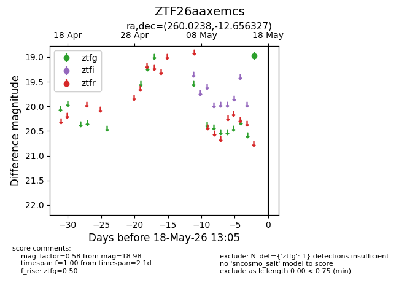
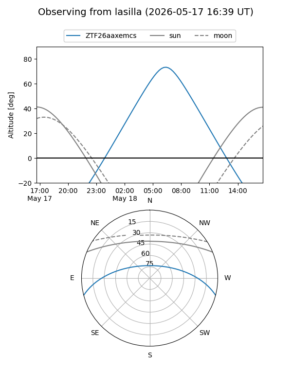
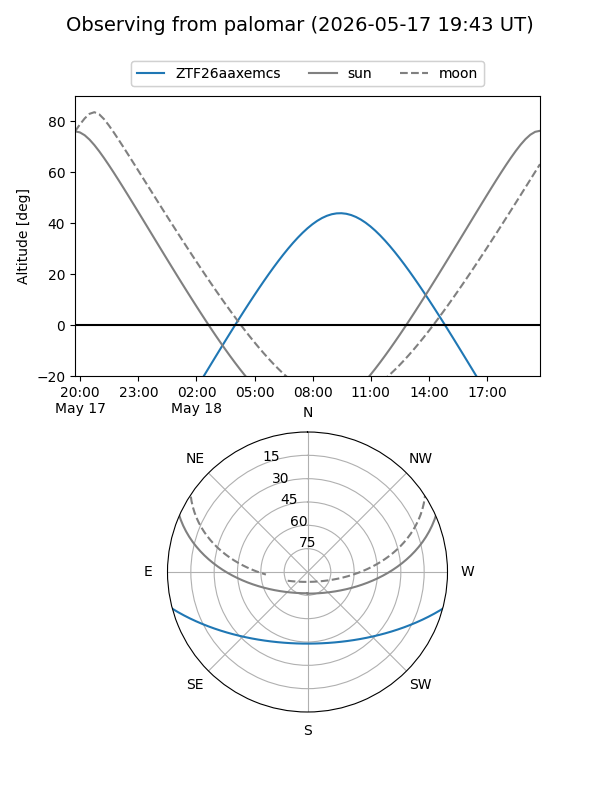

ZTF26aaxemcs
Target ZTF26aaxemcs at 2026-05-18 13:06
Aliases and brokers:
FINK: link
Lasair: link
ALeRCE: link
alt names
ZTF26aaxemcs (ztf,fink_ztf)
Coordinates:
equatorial (ra, dec) = 260.0238,-12.65633
equatorial (HMS+DMS) = 17:20:05.71,-12:39:22.78
galactic (l, b) = (10.6941,+13.71517)
Flags:
Photometry:
last ztfg=18.98
1 ztfg detections
Lightcurve

Visibility


Additional plots